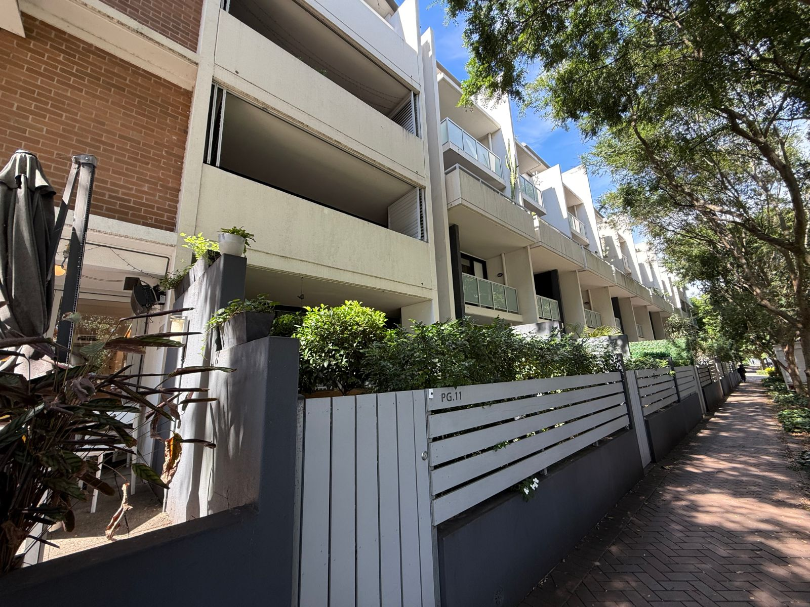
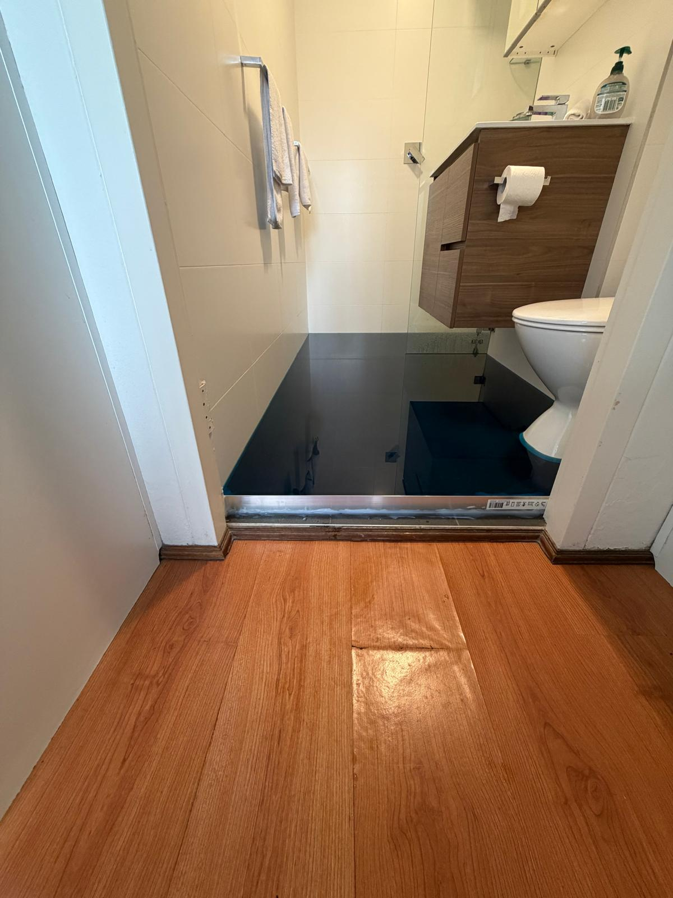
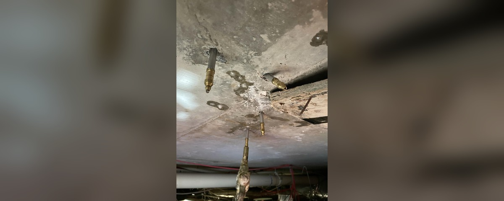
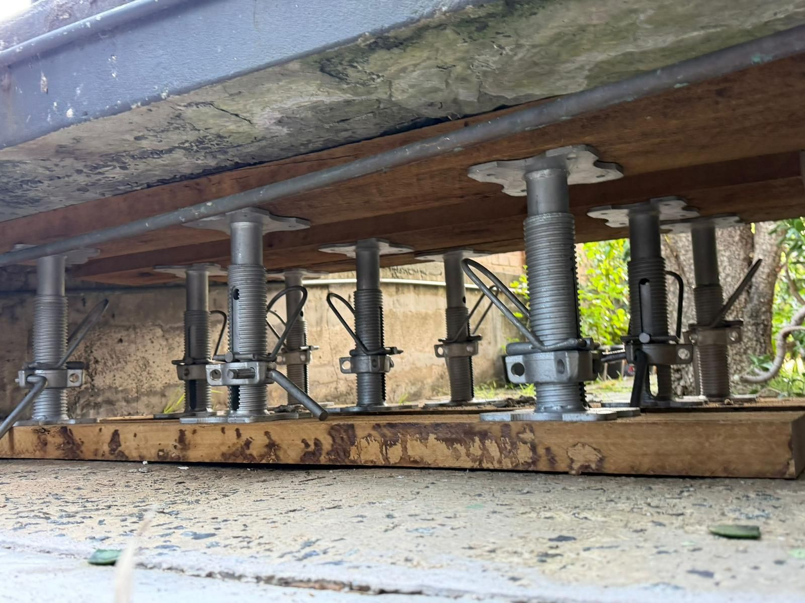
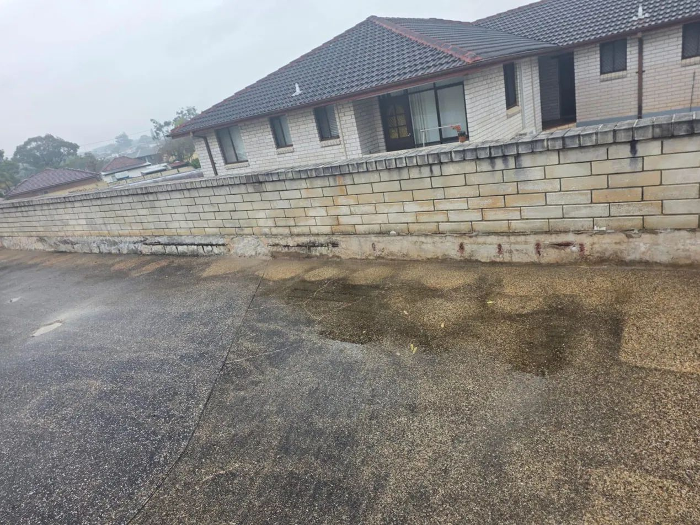
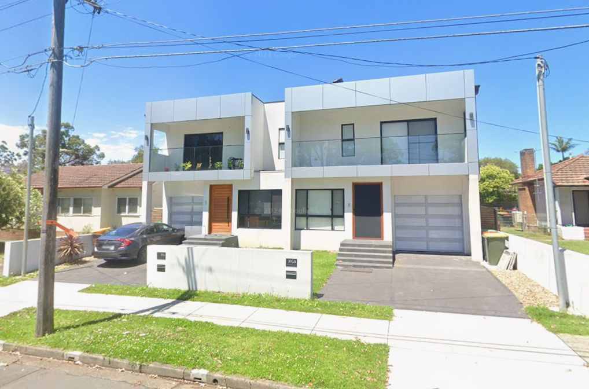
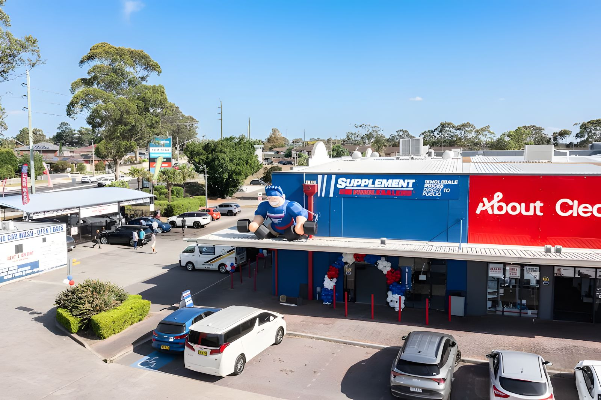

A selection of remedial, structural, and compliance-driven projects delivered across Sydney.

Alexandria, Sydney
Balcony remediation to nine balconies across an occupied residential apartment building, addressing slab edge deterioration and waterproofing membrane defects.

Darlinghurst, Sydney
Leak testing to a residential bathroom following a reported leak, confirming a defective waterproofing membrane and identifying early-stage structural deterioration requiring specialist assessment.

Mascot, Sydney
Ceiling opened to confirm a scope-of-works crack location, uncovering broader concrete cancer and reinforcement corrosion at the adjoining slab perimeter.

Summerhill, Sydney
Investigation identified concrete cancer to the suspended walkway providing sole access to the building, rendering it unsafe for pedestrian use. Findings indicated the condition was likely present throughout the wider structure. Emergency propping and make-safe works were carried out to restore safe access.

Regents Park, Sydney
Destructive investigation across three locations, including balcony substrate, carpark roof slab, and the beam supporting the roof slab and common area balustrade. Identified extensive reinforcement corrosion along the full length of the support beam, requiring priority structural remediation.

Auburn, Sydney
Full construction of a custom residential duplex from slab to finishes, managed directly through structural framing, services coordination, and final handover.

Blacktown, Sydney
Commercial fit-out delivered for a supplement wholesale operation, managed end-to-end to meet a tight trading-ready timeline.